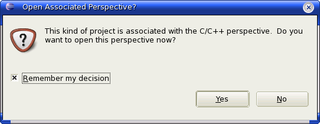

If you have not already done so read "Before you begin" to make sure all the required software components are in place for your platform.
If you are not familiar with eclipse/CDT you should browse the C/C++ Development User Guide for information on CDT system basics.
EclipseSDCC supports CDT managed make projects. In managed make projects CDT manages the build process by creating and maintaining the underlaying makefiles. CDT keeps track of source dependencies and can automatically rebuild the target when needed.
Create your first managed make project. From the menu bar, select File > New > Project...
In the New Project wizard, select C > Managed Make C Project then click Next.
In the Project name field, type your name as the name of your new project. Do not use spaces or special characters in the project name (for example, "test1").
Leave the box checked to use the default location for your new project. Click Next when you are done.
In the Project Type select "MCS851 family (SDCC)". Click Finish when you are done.
You may be asked if you want to change to the C/C++ perspective. Answer yes.

If all has gone well you should now see a project named test1 in the C/C++ project viewer.
Check that eclipseSDCC has correctly determined the default include paths used by the SDCC compiler. These will be seen in the C/C++ project view in the "Includes" folder.
Take a while to familiarise yourself with the environment. Open some on the include files by double-clicking on them. They will be opened in the editor window. Also note the Outline view.
The outline view tracks the content of the editor window. The editor will track selections made in the outline. This allows you to move quickly around your code.
Source files are held in source folders. Source folders can be nested to any depth allowing you to organize your code logically. To create a source folder select the parent project in the C/C++ project view and right-click. In the pop up menu select select New > Source Folder. Enter a suitable name for your source folder and click Finish.
Select the newly created source folder and right-click. In the pop up menu select select New > Source File. Enter a suitable name for your source file and click Finish.
The managed make system will attempt to build your source. Inspect the console view to check that this has happened.
SDCC compile errors are highlighted in several places.
The problems view lists errors in the order they were generated by the SDCC compiler. Double-click on an error to open the source file at the offending line.
In the editor window they are shown as red markers. You can hover over these markers to get the error message.
Errors are also shown in the C/C++ projects view and in the outline view.
Use the Eclipse platform and CDT help documentation to find your way around Eclipse and to resolve generic 'C' problems. Additional help pages are avilable within eclipseSDCC but these only related to eclipseSDCC specific issues.
Eclipse is a fantastic and very stable environment in which to work. As well as 'C' development have a look at the thousands of other plugins that you can download. You'll never go back!